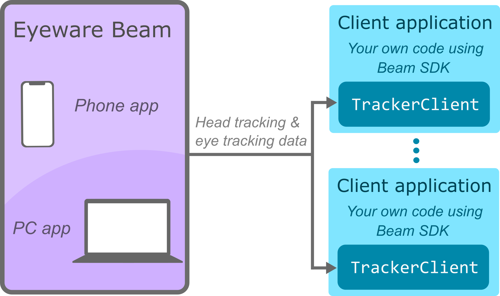

Introduction¶
Beam SDK is the free development kit for Beam that enables you to build and distribute your own eye tracking-enabled PC apps. Beam SDK allows you to use Beam as a general-purpose eye tracker.
{kind=link}
The new generation of applications aims at breaking the barriers of digital interaction. Eye and head tracking technology are one of the contenders that push for the development of more intuitive and immersive devices and digital environments. Tech you can’t see is the best tech.
You can use Beam SDK to create your own immersive game experiences, interactions or accessibility solutions for PC on top of the Eyeware Beam head and eye tracker. Beam SDK helps you:
build accessibility apps to empower all people in the world;
create new games features that will bring players deeper into the digital worlds;
develop apps for academic and user experience (UX) researchers to make data collection easier;
create prototypes quicker for applications in driver monitoring, training simulators, robotics, human-machine interaction.
Eyeware is providing early access to the Beam API for developers and independent software vendors. You can start using Beam as an eye tracking solution now. The API will remain compatible and accessible with future paid subscriptions tiers after the public beta.
Website: https://beam.eyeware.tech/